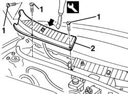
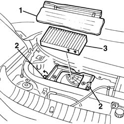
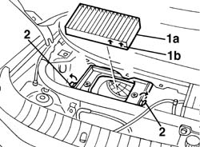
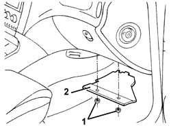
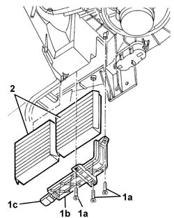
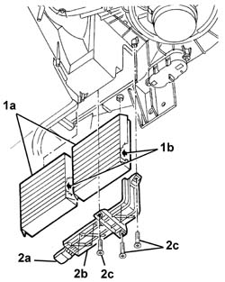

5010B09 purifying filter (antipollen) filter element - replace
- Path
- Procedures > 50 AUXILIARY UNITS > 5010 CLIMATE CONTROL - MISCELLANEOUS > 5010B heating/ventilation air pipes and ducts > 5010B09 purifying filter (antipollen) filter element - replace
- Kind
- repair procedure (removal / refitting; the operation number is the code)
- Applies to
- all engines; all production periods
- Interactive page
- https://sloeber94.github.io/elrnDB-a156/en/#/3238248
Applies to: all engines; all production periods
Applies to: all engines; all production periods
 Removing
Removing
 Refitting
Refitting5050B34 windscreen wiper arm/s complete with blade - r+r
1. Undo the bolts fixing the right trim.
2. Release the trim from the retainers using the special tool, then move it.
 | Name | Country |
|---|---|---|
2 | Scraper blade | 1.823.014.000 |

Applies to: all engines; all production periods
1. Remove the filter protective partition from its housing.
2. Release the filter retaining springs.
3. Extract the filter.

Applies to: all engines; all production periods
Refitting
RemovingCheck that the filter element is not damaged or clogged.
1. Position the purifying filter (1a).
The arrows (1b) should be facing upwards.
2. Attach the retaining springs to the filter.

Applies to: all engines; all production periods
Refit the filter protection in its housing.
Position the right trim and fit it on the retainers.
Tighten the bolts fixing the right trim.
Applies to: all engines; production: da 03/02 a 09/03, da 10/03
Removing
RefittingImportant.
1. Working under the right side of the dashboard, undo the nuts fixing the bulkhead.
2. Remove the bulkhead.

Applies to: all engines; production: da 03/02 a 09/03, da 10/03
1. Undo the bolts (1a) and remove the cover (1b) for the filter elements, after having release it from the retainer (1c).
2. Remove the filter elements.

Applies to: all engines; production: da 03/02 a 09/03, da 10/03
Refitting
RemovingCheck that the filter elements are not damaged or clogged.
1. Position the filter elements (1a).
2. Attach the retainer (2a) for the cover (2b), then tighten the bolts (2c).

Applies to: all engines; production: da 03/02 a 09/03, da 10/03
Position the bulkhead and fix it using the nuts.
Topics linked from this page (1)
Topics that link to this page (12)
- L02 CLIMATE CONTROL NOT WORKING / (NO AIR DELIVERY)
- U10 UNPLEASANT CLIMATE CONTROL ODOURS
- 0010K20 20,000km service coupon, emission control version
- 0010K40 40,000km service coupon, emission control versions
- 0010K60 60,000km service coupon - emission control versions
- 0010K80 80,000km service coupon - emission control versions
- 0010M01 100,000km service coupon, emission control versions
- 0010M20 120,000km service coupon, emission control versions
- 0010M40 140,000km service coupon - emission control versions
- 0010M60 160,000km service coupon - emission control versions
- 0010M80 180,000km service coupon - emission control versions
- 5010B08 ventilation system outside air purifying filter (antipollen) - r+r